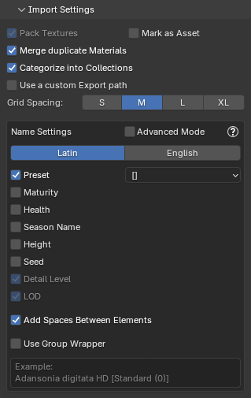
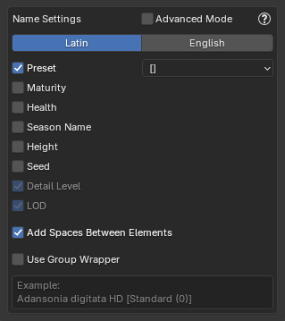
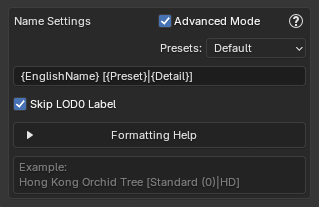

Import Settings
These settings are shared between both Import modes.

General Settings¶
- Pack Textures: Packs the textures of the imported plants into the current Blend file ensuring that your plants retain their appearance without the need for external texture files. Cannot be disabled.
-
Mark as Asset: Marks imported plants as assets, making them easily accessible in Blender's Asset Browser for future use.
- When enabled, the asset will automatically have Asset thumbnail, tags and metadata added for better organization and searchability within the Blender Asset Library. These include:
- Plant name (Latin & English, if available), Preset Description, Preset Name, Maturity, Health, Season, Plant-Category, Height, Seed, Detail Level, LOD.
Asset Tags Example
- When enabled, the asset will automatically have Asset thumbnail, tags and metadata added for better organization and searchability within the Blender Asset Library. These include:
-
Merge duplicate Materials: When enabled, this option ensures that imported plants reuse existing materials in the scene if names match (e.g.
Leaf,Bark). This prevents Blender from generating duplicates likeLeaf.001, helping maintain a cleaner and more organized material list across multiple imports. -
Categorize into Collections: Automatically place imported plants into sub-collections (e.g. Broadleaf Trees, Bushes, Grass) for easier scene organization.
Categories Example
-
Use a custom Export path: Set a custom export path if you need to access the files exported from PlantFactory. If this setting is not enabled, the exported files will be removed from their temporary location once they are imported into Blender.
-
Grid Spacing: Controls the spacing multiplier between plants in the import grid when importing multiple plants at once.
- S = 0.75× spacing
- M = 1.0× (default)
- L = 1.5× spacing
- XL = 3.0× spacing
When importing more than 10 plants, new rows are automatically created. If Import Extra LODs is enabled, each LOD will be placed on its own row.
{kind=link}
{kind=link}
Name Settings¶
Configure how plant objects are named in Blender after import. Each setting includes a dropdown that lets you choose how the selected detail should be formatted in the name. You can enable multiple options to suit your needs, but keep in mind that Blender object names are limited to 63 characters and will be truncated if they exceed this length.
All settings also include a Wrapper option, which controls how parameters are enclosed or separated in the name. Available wrappers: [], (), <>, |, -, _, None

- Language: Choose whether to use the plants Latin name or English name. For example:
Quercus rubraorNorthern Red Oak. - Add Preset: Adds the preset name the name. For example:
Boletus edulis HD [Standard Mat 75]. - Add Maturity
- Add Health
- Add Season Name
- Add Height
- Add Seed
- Detail Level: Appends the detail level (
FG, HD, LD, RT) to the plant name. Note: Only applies when using English plant names and plants from the PlantCatalog library. - Add LOD: Only available when using the Import Extra LODs feature.
- Skip LOD0 Label: when enabled, the base LOD0 plant will not include
LOD0in its name, but higher LODs (LOD1,LOD2, etc.) will.
- Skip LOD0 Label: when enabled, the base LOD0 plant will not include
- Add Spaces Between Elements: Insert spaces between elements in the plant name. For example,
Boletus edulis HD[Standard Mat 75][Spring]will becomeBoletus edulis HD [Standard Mat 75] [Spring]. - Use Group Wrapper: Instead of wrapping each parameter individually, you can wrap several together inside one group.
Example:
Here, the preset, seed, and detail level are grouped together, using the chosen wrapper and separated by a divider. Possible dividers:
|,|,,,-,-.
Advanced Mode
An Advanced Mode is available to fully customize how plant names are generate

When enabled, you can use placeholders like {EnglishName}, {Preset}, {LOD}, {Height}, {HeightUnit}, and more to control the exact format of the name.
- Preset templates are available from a dropdown for quick starting points.
- A built-in help panel lists all available placeholders and examples.
Formatting Help
You can use the following placeholders inside your naming template. They will be replaced with plant-specific values during import.
Available placeholders:
{EnglishName}→ English plant name{LatinName}→ Latin plant name{Preset}→ Preset name{PresetNumber}→ Preset number{PresetDescription}→ Preset description{Maturity}→ Maturity{Health}→ Health{Season}→ Season name{Height}→ Plant height{HeightUnit}→ Height unit (m/cm/mmdepending on scene scale){Seed}→ Seed{Detail}→ Detail level{LOD}→ LOD level
Height formatting examples:
{Height}→ full value (e.g.12.345678){Height:.0f}→ no decimals (e.g.12){Height:.1f}→ 1 decimal (e.g.12.3){Height:.2f}→ 2 decimals (e.g.12.35){Height:.3f}→ 3 decimals (e.g.12.346)
Advanced text formatting examples
{Preset:.5}→ truncate to first 5 characters

- Add Maturity
- Add Health
- Add Season Name
-
Add Height
-
Add Spaces Between Elements: Insert spaces between elements in the plant name. For example,
Boletus edulis HD[Standard Mat 75][Spring]will becomeBoletus edulis HD [Standard Mat 75] [Spring].
Tip
To modify a plant’s name after import, use the Plant Renamer Utility.